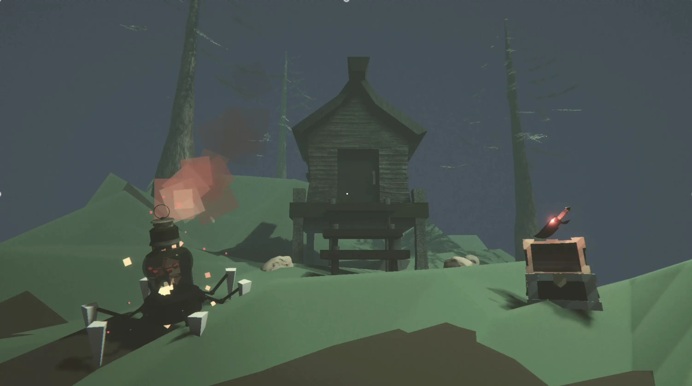
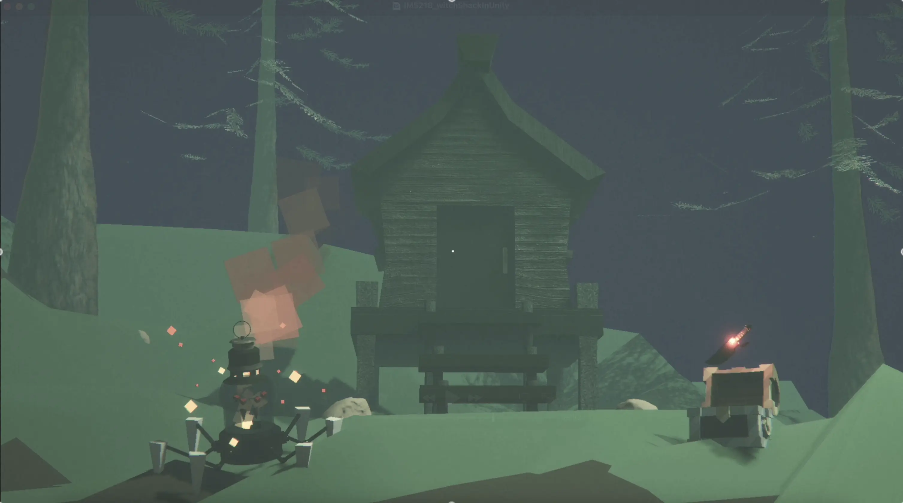
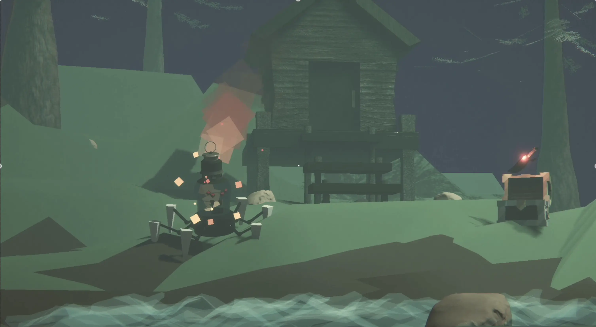
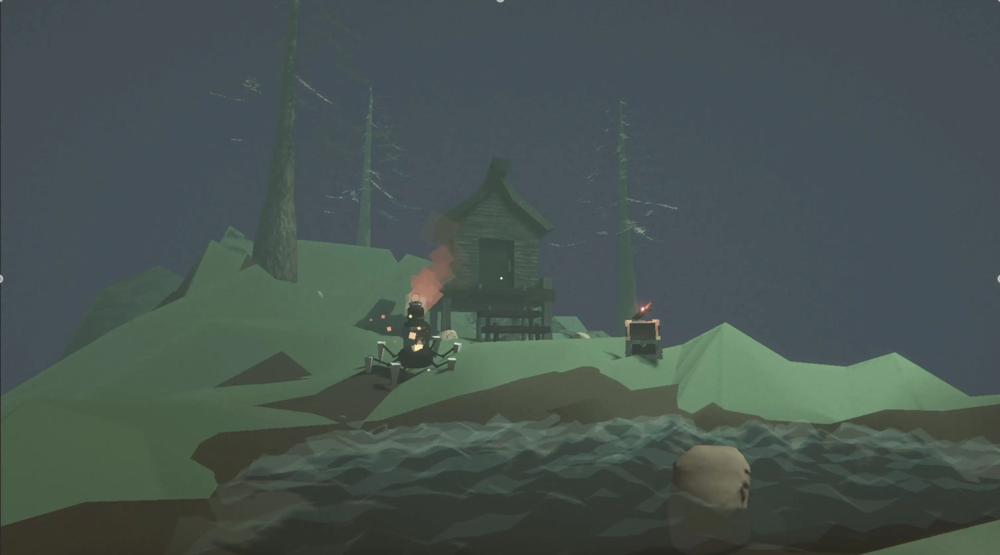
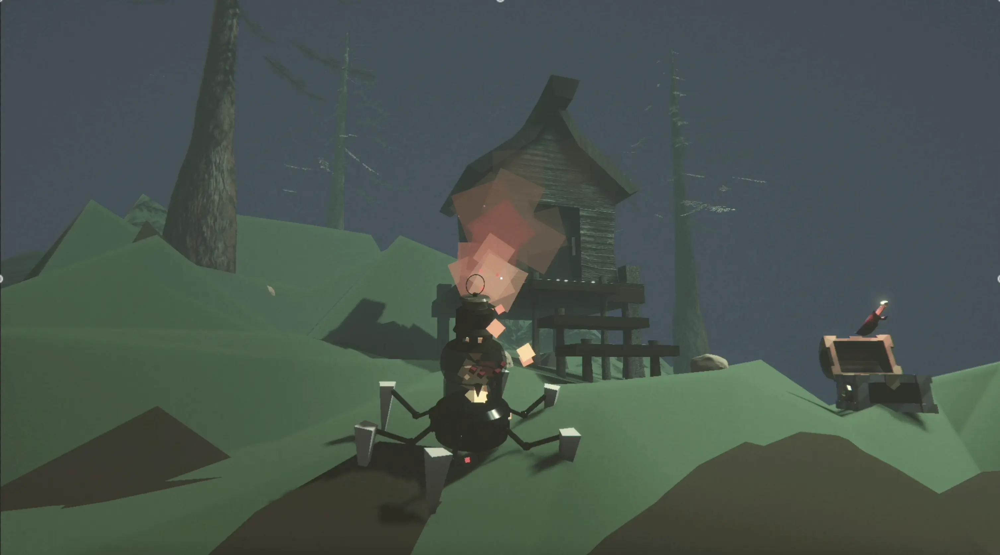
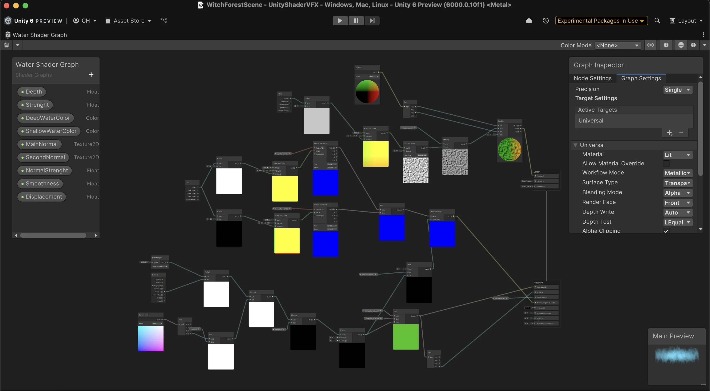
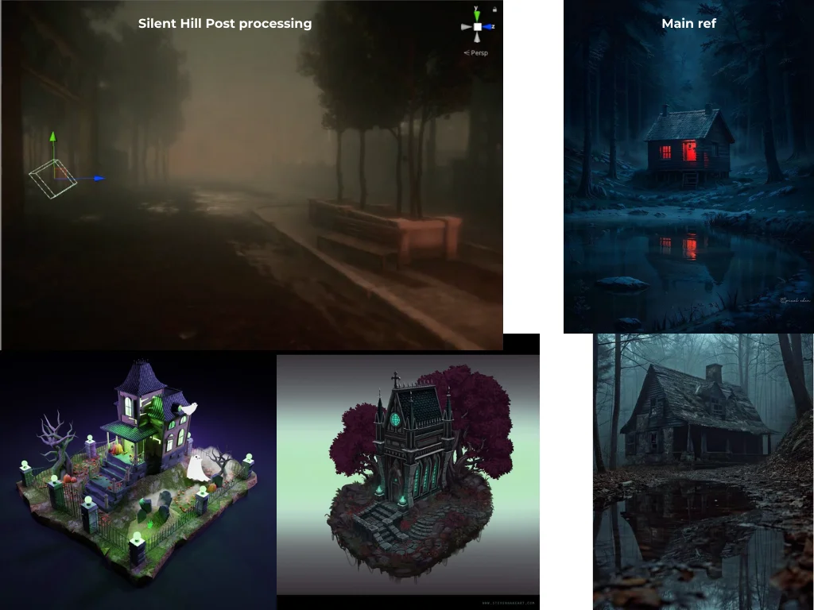

Project type:
VFX project in Unity.
Project description:
For this project, I explored real-time game VFX by exporting my Witch Shack Environment from Maya and integrating it into Unity. Once the scene was fully functional in the engine, I created custom visual effects using Unity’s Shader Graph, including a stylized fire VFX and a wavy water shader.
The primary objective was to expand my understanding of lighting, shading, and real-time effects within a game engine environment. Through this project, I learned how to import assets, reapply textures and materials, and create custom shaders and effects that respond dynamically within the scene. This experience helped bridge the gap between 3D asset creation and implementation in an interactive engine, strengthening my technical and artistic skills in real-time development.
Date:
March 31 - April 13 2024
Role:
3D Sculptor.
Project highlight:
Screenshots from different angles:





Videos from different angles:
Water Shader:

Reference:

Reflection:
This project helps me learnt how to use sculpting and painting tools in Mudbox. It takes a lot of intention to details to make the rock looks organic and like I intended.
I found it challenging to make the details of the obsidian stand out because the rock is dark.